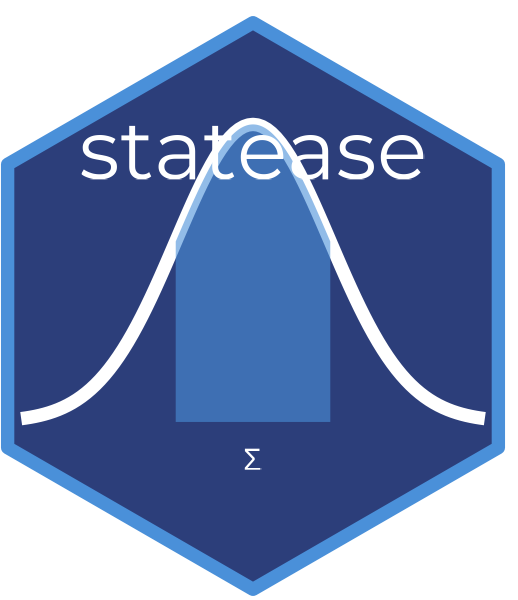

Logistic Regression with Plain-English Interpretation
Source:R/logistic_interpret.R
logistic_interpret.RdLogistic Regression with Plain-English Interpretation
Value
An object of class statease_logistic containing logistic
regression results and interpretation. Use print() to
display the formatted report.
Examples
df <- data.frame(
passed = c(1,1,0,1,0,1,1,0,1,1,0,0,1,1,0),
study_hours = c(9,8,3,7,2,9,8,3,7,6,2,1,8,7,3),
attendance = c(90,85,50,80,45,95,88,55,78,70,40,35,92,83,52)
)
result <- logistic_interpret(passed ~ study_hours + attendance, data = df)
#> Warning: Sample size is small (n < 20). Interpret results with caution.
#> Warning: glm.fit: fitted probabilities numerically 0 or 1 occurred
#> Waiting for profiling to be done...
print(result)
#>
#> -- statease Logistic Regression Report --------------------------
#> Outcome : passed
#> Predictors : study_hours, attendance
#> N : 15
#> -----------------------------------------------------------------
#> Overall Model Fit:
#> Chi-square : 20.190 (df = 2) p = 0.0000
#> Nagelkerke R2: 1.0000 (large effect)
#> The overall model is statistically significant (p = 0.0000 < alpha 0.05).
#> -----------------------------------------------------------------
#> Individual Predictors:
#>
#> study_hours
#> Coefficient : 30.250 (SE = 140113.493)
#> z-statistic : 0.000
#> p-value : 0.9998 [not significant]
#> Odds Ratio : 13716359765703.211
#> 95% CI (OR) : [0.000, Inf]
#> Interpretation: each unit increase in study_hours increases the odds by 1371635976570221.0%.
#>
#> attendance
#> Coefficient : -2.253 (SE = 18616.367)
#> z-statistic : -0.000
#> p-value : 0.9999 [not significant]
#> Odds Ratio : 0.105
#> 95% CI (OR) : [0.000, Inf]
#> Interpretation: each unit increase in attendance decreases the odds by 89.5%.
#> -----------------------------------------------------------------
#> Interpretation:
#> The model is statistically significant (p = 0.0000 < alpha 0.05).
#> Nagelkerke R2 = 1.0000 suggests a large amount of
#> variance in passed is explained by the predictors.
#> Non-significant predictors: study_hours, attendance
#> -----------------------------------------------------------------
#>